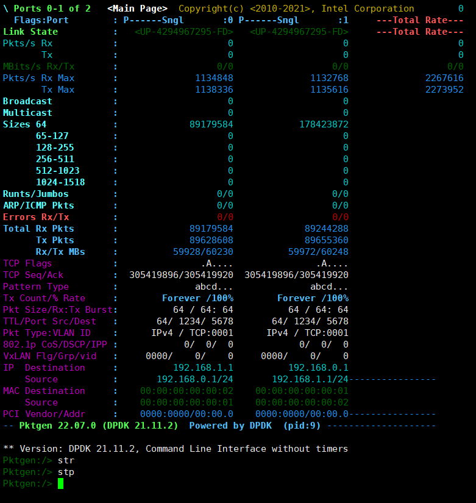
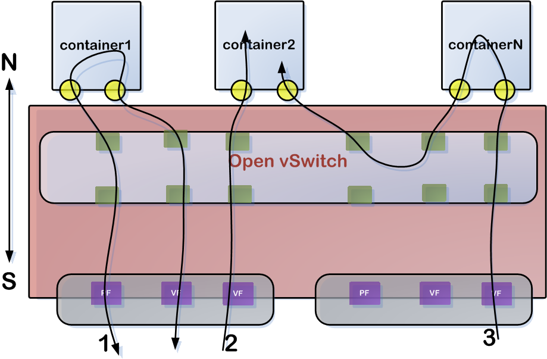
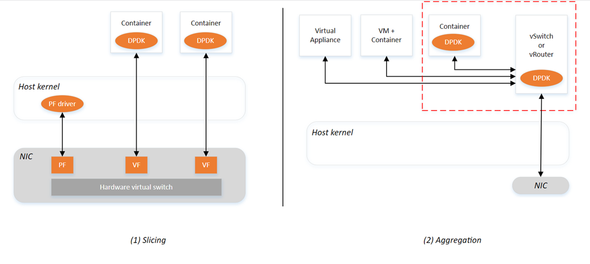

7. ovs-dpdk-docker
date: 2023-02-04
DPDK_in_Containers_Hands-on_Lab
https://github.com/intel/SDN-NFV-Hands-on-Samples/tree/master/DPDK_in_Containers_Hands-on_Lab
vmware : 192.168.68.56 u22.04

vi /etc/default/grub
GRUB_CMDLINE_LINUX="default_hugepagesz=1G hugepagesz=1G hugepages=8 iommu=pt intel_iommu=on"
update-grub
reboot
# hugepages=4 同时运行pktgen, dpdk-testpmd报错！
root@dpdk56:~# dpdk-hugepages.py -s
Node Pages Size Total
0 5 1Gb 5Gb
Hugepages mounted on /dev/hugepages
## no 8G -> 5G 实际 5G ## vm内存修改为16G
apt install -y openvswitch-switch-dpdk
update-alternatives --set ovs-vswitchd /usr/lib/openvswitch-switch-dpdk/ovs-vswitchd-dpdk
ovs-vswitchd --version
systemctl restart openvswitch-switch.service
ovs-vsctl --no-wait set Open_vSwitch . other_config:dpdk-init=true
ovs-vsctl --no-wait set Open_vSwitch . other_config:dpdk-socket-mem="1024,0" ### 只有一个numa node0
ovs-vsctl --no-wait set Open_vSwitch . other_config:dpdk-lcore-mask=0x2 ### 0b0010 --> Cpu1
ovs-vsctl set Open_vSwitch . other_config:pmd-cpu-mask=0x4 ### 0b0100 --> Cpu2
ovs-vsctl add-br br0 -- set bridge br0 datapath_type=netdev
ovs-vsctl add-port br0 vhost-user1 -- set Interface vhost-user1 type=dpdkvhostuser
ovs-vsctl add-port br0 vhost-user2 -- set Interface vhost-user2 type=dpdkvhostuser
ovs-vsctl add-port br0 vhost-user3 -- set Interface vhost-user3 type=dpdkvhostuser
ovs-vsctl add-port br0 vhost-user4 -- set Interface vhost-user4 type=dpdkvhostuser
ovs-vsctl show
ovs-ofctl show br0
# 不加也可以
# echo never > /sys/kernel/mm/transparent_hugepage/enabled
# echo never > /sys/kernel/mm/transparent_hugepage/defrag
ls -l /var/run/openvswitch/|grep vhost-user
srwxr-xr-x 1 root root 0 Dec 30 16:13 vhost-user1
srwxr-xr-x 1 root root 0 Dec 30 16:13 vhost-user2
srwxr-xr-x 1 root root 0 Dec 30 16:13 vhost-user3
srwxr-xr-x 1 root root 0 Dec 30 16:13 vhost-user4

ovs-ofctl del-flows br0
echo "(Add bi-directional flow vhost-user2 and vhost-user3)"
ovs-ofctl add-flow br0 in_port=2,dl_type=0x800,idle_timeout=0,action=output:3
ovs-ofctl add-flow br0 in_port=3,dl_type=0x800,idle_timeout=0,action=output:2
echo "(Add bi-directional flow between vhost-user1 and vhost-user4)"
ovs-ofctl add-flow br0 in_port=1,dl_type=0x800,idle_timeout=0,action=output:4
ovs-ofctl add-flow br0 in_port=4,dl_type=0x800,idle_timeout=0,action=output:1
ovs-ofctl dump-flows br0
echo "Showing OpenFlow to Open vSwitch port mapping:"
ovs-ofctl show br0
ovs-ofctl dump-ports br0

build dpdk-docker, (包含dpdk-testpmd，没有dpdk-l2fwd)
cat << EOF > Dockerfile
FROM ubuntu:22.04
RUN sed -i 's/archive.ubuntu.com/mirrors.ustc.edu.cn/g' /etc/apt/sources.list
RUN sed -i 's/security.ubuntu.com/mirrors.ustc.edu.cn/g' /etc/apt/sources.list
RUN ln -sf ../usr/share/zoneinfo/Asia/Shanghai /etc/localtime
RUN apt-get update && apt-get install -y dpdk dpdk-dev iperf tcpdump
WORKDIR /root
RUN apt-get -qq clean && rm -rf /var/lib/apt/lists/* /tmp/* /var/tmp/*
CMD ["/bin/bash"]
EOF
docker build -t amwork2010/dpdk:u2204 .
##### 源码build dpdk-docker, (包含dpdk-testpmd，包含dpdk-l2fwd)
cat << EOF > Dockerfile
FROM ubuntu:22.04
RUN sed -i 's/archive.ubuntu.com/mirrors.ustc.edu.cn/g' /etc/apt/sources.list
RUN sed -i 's/security.ubuntu.com/mirrors.ustc.edu.cn/g' /etc/apt/sources.list
RUN ln -sf ../usr/share/zoneinfo/Asia/Shanghai /etc/localtime
RUN apt update && apt install -y build-essential
RUN apt install -y meson python3-pyelftools pkg-config libnuma-dev wget
WORKDIR /root
RUN wget http://fast.dpdk.org/rel/dpdk-22.11.1.tar.xz
RUN tar Jxvf dpdk-22.11.1.tar.xz
RUN cd dpdk-stable-22.11.1 && meson setup -Dexamples=all build && cd build && ninja && ninja install
RUN apt-get -qq clean && rm -rf /var/lib/apt/lists/* /tmp/* /var/tmp/*
CMD ["/bin/bash"]
EOF
docker build -t amwork2010/dpdk:22.11 .
build dpdk-pktgen
cat << EOF > Dockerfile
FROM ubuntu:22.04
RUN sed -i 's/archive.ubuntu.com/mirrors.ustc.edu.cn/g' /etc/apt/sources.list
RUN sed -i 's/security.ubuntu.com/mirrors.ustc.edu.cn/g' /etc/apt/sources.list
RUN ln -sf ../usr/share/zoneinfo/Asia/Shanghai /etc/localtime
RUN apt update && apt install -y build-essential meson python3-pyelftools pkg-config libnuma-dev wget dpdk dpdk-dev
WORKDIR /root
RUN wget https://github.com/pktgen/Pktgen-DPDK/archive/refs/tags/pktgen-22.07.1.tar.gz
RUN tar zxvf pktgen-22.07.1.tar.gz
RUN cd Pktgen-DPDK-pktgen-22.07.1 && meson build && cd build && ninja
RUN cp /root/Pktgen-DPDK-pktgen-22.07.1/build/app/pktgen /usr/bin
RUN apt-get -qq clean && rm -rf /var/lib/apt/lists/* /tmp/* /var/tmp/*
CMD ["/bin/bash"]
EOF
docker build -t amwork2010/pktgen:22.07 .
run dpdk-testpmd
docker run -it --rm --privileged \
-v /dev/hugepages:/dev/hugepages -v /var/run/openvswitch:/var/run/openvswitch amwork2010/dpdk:u2204
#-c 0xE0: DPDK can run on core 5-7: (0b1110 0000)--> Cpu6 Cpu7
#--main-lcore 5: make the make the master testpmd thread run on core 5 (0b0010 0000)
#-n 1: we only have one memory bank in this VM
#--file-prefix testpmd: "testpmd" will be appended to hugepage memory files used by this process
#--no-pci don't look for any PCI devices
#--vdev=net_virtio_user3,mac=00:00:00:00:00:03,path=/var/run/openvswitch/vhost-user3
#--vdev=net_virtio_user4,mac=00:00:00:00:00:04,path=/var/run/openvswitch/vhost-user4:
# use a virtual
# device using the net_virtio_user driver, MAC address 00:00:00:00:00:03, and the path to the
# unix socket is /var/run/openvswitch/vhost-user3
dpdk-testpmd -c 0xE0 -n 1 --socket-mem 1024 --file-prefix testpmd --no-pci \
--vdev 'net_virtio_user3,mac=00:00:00:00:00:03,path=/var/run/openvswitch/vhost-user3' \
--vdev 'net_virtio_user4,mac=00:00:00:00:00:04,path=/var/run/openvswitch/vhost-user4' \
-- -i --burst=64 --txd=2048 --rxd=2048 --auto-start --coremask=0xc0
提示符：
testpmd> show port stats all
run pktgen
docker run -it --rm --privileged \
-v /dev/hugepages:/dev/hugepages -v /var/run/openvswitch:/var/run/openvswitch amwork2010/pktgen:22.07
#-c 0x19: DPDK can run on core 0,3-4: (0b0001 1001)
#--main-lcore 3: make the pktgen dpdk thread run on core 3 (0b1000)
#-n 1: we only have one memory bank in this VM
#--file-prefix pktgen: "pktgen" will be appended to hugepage memory files used by this process
#--no-pci don't look for any PCI devices
#--vdev 'virtio_user1,mac=00:00:00:00:00:01,path=/var/run/openvswitch/vhost-user1'
#--vdev 'virtio_user2,mac=00:00:00:00:00:02,path=/var/run/openvswitch/vhost-user2'
#-P: Promiscuous mode
#-T: Color terminal output
#-m "0.0,4.1" (core.port): core 0: port 0 rx/tx; core 4: port 1 rx/tx
#注：-m选项一定要和前面dpdk的-c选项符合
pktgen -c 0x19 --main-lcore 3 -n 1 --socket-mem 1024 --file-prefix pktgen --no-pci \
--vdev 'net_virtio_user1,mac=00:00:00:00:00:01,path=/var/run/openvswitch/vhost-user1' \
--vdev 'net_virtio_user2,mac=00:00:00:00:00:02,path=/var/run/openvswitch/vhost-user2' \
-- -T -P -m "0.0,4.1"
提示符：
> start all ### str ### stp
# 在pktgen中设置速率为10%，更具体的速率设置可以通过tx_cycles设置
# 端口0共发送100个包，端口1发送200个
Pktgen:/>set all rate 10
Pktgen:/>set 0 count 100
Pktgen:/>set 1 count 200
Pktgen:/>str

watch -n 1 ovs-ofctl dump-flows br0



run pktgen
docker run -it --rm --privileged \
-v /dev/hugepages:/dev/hugepages -v /var/run/openvswitch:/var/run/openvswitch amwork2010/pktgen:22.07
pktgen -c 0x19 --main-lcore 3 -n 1 --socket-mem 1024 --file-prefix pktgen --no-pci \
--vdev 'net_virtio_user1,mac=00:00:00:00:00:01,path=/var/run/openvswitch/vhost-user1' \
--vdev 'net_virtio_user2,mac=00:00:00:00:00:02,path=/var/run/openvswitch/vhost-user2' \
-- -T -P -m "0.0,4.1"
发包验证
在pktgen端执行：
# 在pktgen中设置速率为10%，更具体的速率设置可以通过tx_cycles设置
# 端口0共发送100个包，端口1发送200个
Pktgen:/>set all rate 10
Pktgen:/>set 0 count 100
Pktgen:/>set 1 count 200
Pktgen:/>str
set all rate 10
set 0 count 100
set 1 count 200
str

总结 本次实践主要还是集中在OVS上面的container App的互通以及container内部对dpdk的支持，分别验证了在container内部运行testpmd和l2fwd来进行报文转发。其中，dpdk app的运行模式可以为后续cneos平台server docker化提供一定的技术指导作用。 如果从更系统化的层面来考虑docker结合ovs以及dpdk的使用，更通用的使用场景应该是这样的：在ovs的南向通过dpdk pmd和硬件平台上物理nic的PF或VF绑定，高速收发报文；在ovs的北向，通过virtual device和docker container来共享收发报文，进行上层业务的处理。 南北向之间的流量需要配置flow table来指导转发。流量示意如下图所示：
 流量从物理port流入，到达OVS查找流表送入到串联检测类container1(如NF，IPS)中，container1处理完后再送回流表，再次查找流表找到物理口发送出去 流量从物理port流入，到达OVS查找流表送入到检测类container2中(如WAF) 考虑到有多个安全container app，流量串行通过containerN,container2; 实际上，container之间的数据交互还有别的实现方式，如docker天然支持容器互联技术，这块还有待进一步确定实际方案
https://github.com/intel/SDN-NFV-Hands-on-Samples/tree/master/DPDK_in_Containers_Hands-on_Lab
ovs+dpdk-docker实践
https://huaweicloud.csdn.net/635669a1d3efff3090b5e5af.html?spm=1001.2101.3001.6661.1&utm_medium=distribute.pc_relevant_t0.none-task-blog-2~default~BlogCommendFromBaidu~activity-1-78589592-blog-77887910.pc_relevant_vip_default&depth_1-utm_source=distribute.pc_relevant_t0.none-task-blog-2~default~BlogCommendFromBaidu~activity-1-78589592-blog-77887910.pc_relevant_vip_default&utm_relevant_index=1
https://datawine.github.io/docker-ovs-dpdk-vnf-exp.html https://blog.csdn.net/me_blue/article/details/78589592 https://www.youtube.com/watch?v=hEmvd7ZjkFw&list=PLg-UKERBljNx44Q68QfQcYsza-fV0ARbp https://www.slideshare.net/MichelleHolley1/dpdk-in-containers-handson-lab
https://doc.dpdk.org/guides/howto/virtio_user_for_container_networking.html

上图(1) 方案中需要NIC支持SR-IOV功能，物理NIC支持的VF个数也依赖于硬件资源；每个container的接口独占VF，多个VF共享下面的一个PF。基于这种方案实现的container，无论对硬件的依赖和绑定，还是container的迁移，支持性都做得不够好。
上图(2) 方案中需要在host中运行vswitch或者vRouter来将上层的containers和底层的物理NIC解耦，只要vswitch（当前比较流行的OVS+DPDK，将OVS放在用户态来实现）的性能足够，一样可以实现高性能的container app了。
 基于以上比较，本次预研主要选取第二种方案来实现，方案中使用virtual device(包括virtio-user和vhost-user backend）来实现高性能的container App 或者IPC。Virtio使用共享内存的方式来收发报文，传统的VM可以通过qemu来共享vhost后端的物理地址，但对container而言，作为系统的一个进程，使用这种方式则比较难。目前的思路是只能使用DPDK初始化的hugepages来进行内存共享。所以，要在container中使用dpdk，必须要分配足够的大页内存，且不同container在使用共享内存时要能够分区使用，避免地址重复。
基于以上比较，本次预研主要选取第二种方案来实现，方案中使用virtual device(包括virtio-user和vhost-user backend）来实现高性能的container App 或者IPC。Virtio使用共享内存的方式来收发报文，传统的VM可以通过qemu来共享vhost后端的物理地址，但对container而言，作为系统的一个进程，使用这种方式则比较难。目前的思路是只能使用DPDK初始化的hugepages来进行内存共享。所以，要在container中使用dpdk，必须要分配足够的大页内存，且不同container在使用共享内存时要能够分区使用，避免地址重复。